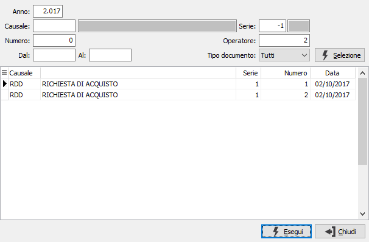
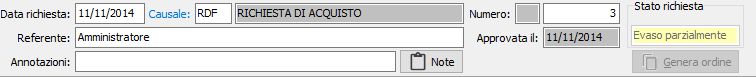
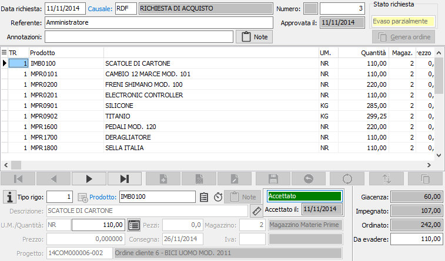
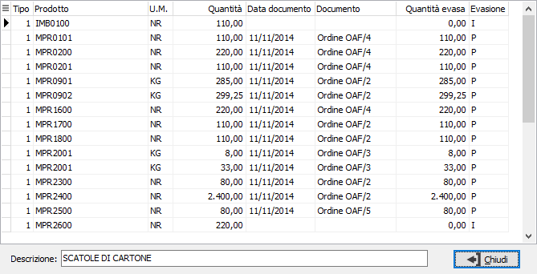
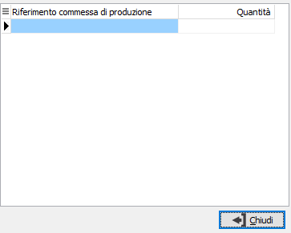
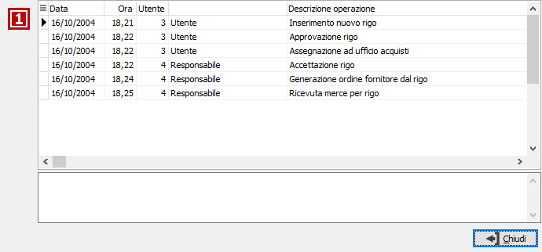
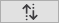
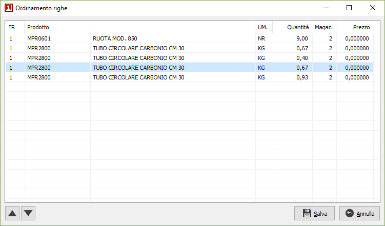
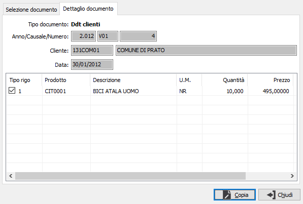
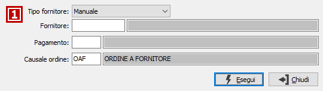

Utilizzando il pulsante presente accanto al tipo rigo compare la seguente finestra:
Utilizzando il pulsante presente accanto al tipo rigo compare la seguente finestra:Gestione richieste di acquisto
Il programma di Gestione richieste di acquisto consente di inserire, variare, cancellare e stampare i documenti di richiesta che chiameremo RDA. Al momento del primo accesso al programma, lo stesso si situa in modalità di Visualizzazione.
Il cursore si posiziona sul campo data. Su questo campo l’utente deve definire il tipo di azione che intende compiere. In altre parole, deve decidere se inserire nuove RDA, oppure visualizzare, modificare, cancellare o stampare RDA esistenti. L’azione da compiere può essere comandata tramite la pressione di alcuni pulsanti della tool bar o tramite l’uso dei corrispondenti tasti funzione.
Non tutti gli utenti possono accedere alla modifica di una RDA, ma solo l'autore oppure un suo responsabile.
Ricerca e visualizzazione di una RDA
Cliccando due volte sul campo data o premendo il tasto funzione F9, si apre la finestra video di Ricerca RDA.

La finestra video di Ricerca RDA presenta in primo luogo il pannello di input costituito da alcuni campi per inserire “filtri” o parametri di ricerca che consentono di limitare il numero di documenti da presentare a video.
E’ possibile infatti indicare l’anno a cui si riferiscono le RDA da individuare, oppure il codice (con possibilità di ricerca tramite lo zoom F9) della causale RDA da ricercare, oppure le date di inizio e fine ricerca, oppure se ricercare solo le RDA da evadere, evase o tutte, o più parametri fra quelli indicati. Conoscendolo, è possibile indicare il numero di RDA da ricercare.
Qualsiasi parametro si sia inserito, occorre attivare la selezione cliccando sul bottone Selezione. Attivata la selezione, nella griglia della sezione video inferiore vengono visualizzati tutti le RDA esistenti coerenti con i parametri di selezione inseriti. Utilizzando i tasti freccia su o freccia giù, oppure usando il mouse, ci si posiziona sul rigo relativo alla RDA da trattare, selezionandolo quando una delle celle di tale rigo viene evidenziata. Cliccando quindi sul bottone Esegui o cliccando due volte sul rigo attivo, viene visualizzata la RDA selezionata.
Dati generali
La parte superiore contiene i dati generali relativi alla RDA in esame, l'eventuale data di approvazione e lo stato attuale del documento.
Se attiva la gestione dei progetti in configurazione sarà presente il codice del progetto, nel caso la gestione progetti sia di testata.

DATA RICHIESTA: definisce la data in cui viene eseguita la richiesta. Viene proposta la data di sistema.
CAUSALE: codice alfanumerico di 3 caratteri presente nella tabella Causali Richieste che definisce la tipologia di RDA in esame. Sul campo sono attive le funzioni di ricerca (F9) ed accesso rapido (CTRL+W) sulla tabella stessa. La causale è strettamente collegata all'utente che inserisce la RDA; se quest'ultimo non è abilitato all'uso di nessuna causale, non potrà inserire nessun documento.
NUMERO: campo numerico che contiene il numero progressivo della RDA. Viene completato automaticamente dal programma in base alla serie contenuta dalla causale. E’ modificabile dall’utente.
REFERENTE: viene riportato automaticamente il nome dell'utente che inserisce la richiesta.
ANNOTAZIONI: campo note a disposizione dell'utente; è disponibile anche un pulsante Note per l'inserimento di annotazioni più ampie.
Sulla parte di destra è visibile l'eventuale data di approvazione e lo stato della richiesta stessa; facendo doppio clic con il mouse su quest'ultimo viene visualizzata una finestra che indica lo stato di evasione di ciascun rigo.
Dati di rigo
In questa sezione è possibile inserire le varie righe della RDA. È possibile inserire righe relative ad articoli codificati, ad articoli non presenti in magazzino e descrittivi. Non tutti i campi visualizzati nell’illustrazione seguente sono necessariamente presenti nell’installazione attiva presso l’utente: se l’utente non gestisce la cronologia, non viene visualizzato il pulsante cronologia e così via.
Se attiva la gestione dei progetti in configurazione sarà presente il codice del progetto , nel caso la gestione progetti sia di rigo.
La sezione è divisa in due parti: la parte inferiore visualizza il pannello di input mentre la griglia della parte superiore visualizza le righe inserite.

TIPO RIGO: codice numerico presente sulla tabella dei tipi rigo utilizzato per definire il tipo di rigo che si vuole inserire. Sul campo sono attive le funzioni di ricerca (F9). Utilizzando il pulsante presente accanto al tipo rigo compare la seguente finestra:

Da questa finestra è possibile utilizzando i criteri di selezione visualizzare, tramite il pulsante Selezione, un elenco di prodotti che è possibile inserire nel documento. Se nella configurazione del modulo standard è stato impostato il campo "N. mesi per ricerca prodotti movimentati" viene attivata la data "Movimentati dal" che permette di selezionare solo gli articoli movimentati dalla data indicata, in questo caso nella quantità viene visualizzata la quantità dell'ultimo documento. Per ogni prodotto visualizzato è possibile impostare una quantità, che sarà riportata sul rigo del documento; se la quantità viene impostata a zero il prodotto non sarà inserito nel documento. E' possibile anche selezionare o deselezionare il prodotto agendo con il doppio clic del mouse sulla riga del prodotto stesso, la selezione porta la quantità a 1; le righe che saranno importate sul documento appariranno di colore giallo chiaro.
PRODOTTO: campo alfanumerico per inserire il codice dell’articolo che si intende richiedere. Il campo è attivo solo per i tipi di rigo che prevedono l'accesso al prodotto. Sul campo sono attive le funzioni di ricerca (F9) ed accesso rapido alla tabella (CTRL+W).
DESCRIZIONE: campo alfanumerico di 60 caratteri per descrivere il prodotto. In caso di articoli codificati, il campo viene compilato automaticamente con la descrizione dell’articolo in esame, che è tuttavia modificabile a cura dell’utente. In caso di tipo rigo che identifichi righe descrittive, sul campo è attiva la ricerca sulla tabella dei Testi fissi documenti, che consente di acquisire testi precedentemente inseriti ed assegnati ad un codice.
NOTE: bottone che abilita un campo annotazioni, relative al rigo di documento attivo, che verranno stampate sul documento. Nel caso la causale lo preveda (casella stampa descrizione estesa con segno di spunta) ed il prodotto abbia una descrizione estesa dichiarata non fissa (casella fissa in anagrafica articoli non spuntata), questa viene automaticamente riportata in questo campo.
UNITÀ DI MISURA: campo alfanumerico di 3 caratteri, presente nella tabella Unità di misura, per descrivere l’unità di misura del prodotto. Per gli articoli codificati viene presentata automaticamente la prima unità di misura presente in anagrafica. L’unità di misura può essere modificata dall’utente, ma per gli articoli codificati vengono accettati solo i codici delle unità di misura presenti in anagrafica articolo. Sul campo sono attive le funzioni di ricerca (F9) ed accesso rapido alla tabella (CTRL+W). Tramite il tasto funzione F11 si può accedere alla finestra relativa al fattore di conversione.
QUANTITÀ: campo numerico per inserire la quantità ordinata per l'articolo attivo. Se attiva la gestione del dettaglio quantità è presente il bottone dettaglio, a destra del campo, tramite il quale sarà visualizzata la relativa finestra di dettaglio quantità; l'attivazione della finestra avviene comunque in automatico al momento dell'accesso al campo quantità.
PEZZI: campo numerico che indica la seconda quantità del documento, se attivato da configurazione.
MAGAZZINO DI CONSEGNA: codice del magazzino aziendale in cui deve essere consegnata la merce per l’evasione della richiesta. Viene proposto il magazzino presente in configurazione. Sul campo sono attive le funzioni di ricerca (F9) ed accesso rapido alla tabella (CTRL+W).
DATA CONSEGNA: campo data per l’inserimento della data effettiva di consegna di rigo. È obbligatorio inserirla (comunque viene proposta la data dell'ordine).
Sopra la data di consegna è presente un riquadro che indica, anche tramite colori diversi, lo stato del rigo corrente e l'eventuale data di accettazione. Finchè il rigo è in valutazione è modificabile; gli stati successivi inibiscono ogni operazione. Gli stati successivi sono: approvazione, accettazione o respinta, generati ordini fornitori e ricevuta merce.
Nella finestra video è possibile scorrere le righe di documento, visualizzando quello attivo nel pannello di input, tramite i tasti CTRL+freccia giù e CTRL+freccia su. Un rigo di documento visualizzato nel pannello di input può essere eliminato, ancorchè privo di trattamenti successivi, premendo il bottone Elimina della barra strumenti del pannello di input; è possibile inserire un rigo vuoto immediatamente successivo al rigo attivo premendo il bottone Nuovo della barra strumenti del pannello di input.
Tramite il pulsante Dettaglio evasione rigo, è possibile visualizzare lo stato di evasione del rigo. Nella finestra compaiono i riferimenti ai documenti con cui è stato evaso parzialmente o totalmente il rigo della richiesta.

 Tramite il pulsante Dettaglio commesse di produzione, se gestito in configurazione, è possibile visualizzare l'elenco delle commesse di produzione imputate direttamente al rigo corrente con le relative quantità.
Tramite il pulsante Dettaglio commesse di produzione, se gestito in configurazione, è possibile visualizzare l'elenco delle commesse di produzione imputate direttamente al rigo corrente con le relative quantità.

 Tramite il pulsante Cronologia, se gestito in configurazione, è possibile visualizzare la cronologia degli eventi che vedono coinvolto il rigo corrente; ad esempio variazioni, accettazioni ecc. Nella cronologia sono contenute le informazioni relative alla data, all'ora, all'utente che ha compiuto l'operazione, la descrizione dell'operazione ed eventuali note inserite successivamente.
Tramite il pulsante Cronologia, se gestito in configurazione, è possibile visualizzare la cronologia degli eventi che vedono coinvolto il rigo corrente; ad esempio variazioni, accettazioni ecc. Nella cronologia sono contenute le informazioni relative alla data, all'ora, all'utente che ha compiuto l'operazione, la descrizione dell'operazione ed eventuali note inserite successivamente.

 Se attiva la gestione misure prodotti, tramite questo pulsante, è possibile accedere alla finestra di Gestione misure in modo da utilizzare i dati per il calcolo della quantità. Il pulsante consente anche di verificare visivamente se sono presenti dei dati relativi alle misure in quanto appare in un colore diverso quando questi sono presenti.
Se attiva la gestione misure prodotti, tramite questo pulsante, è possibile accedere alla finestra di Gestione misure in modo da utilizzare i dati per il calcolo della quantità. Il pulsante consente anche di verificare visivamente se sono presenti dei dati relativi alle misure in quanto appare in un colore diverso quando questi sono presenti.

Tramite il pulsante Ordina è possibile modificare l'ordinamento delle righe del documento spostandole singolarmente tramite gli appositi tasti di scorrimento oppure selezionando e trascinando le singole righe. La pressione sul pulsante Salva determina la modifica effettiva dell'ordinamento.
Tramite il pulsante Copia è possibile inserire nel documento righe estratte da altri documenti, uguali o di altro tipo, i parametri vengono proposti in base alla Configurazione copia righe documenti.

La finestra permette di specificare diversi criteri di selezione, tra cui il tipo di documento, l'anno, la causale, il numero e l'eventuale periodo di analisi; è comunque necessario premere il pulsante Seleziona che visualizzerà nella griglia sottostante l'elenco dei documenti coerenti con i parametri di selezione richiesti. Premendo il pulsante Dettaglio vengono visualizzate le righe del documento selezionato. è presente il pulsante "Cambia ditta" che consente di selezionare un'altra azienda da cui copiare i dati; quando l'azienda è diversa dalla corrente il pulsante appare col testo evidenziato e sotto viene mostrato il nome dell'azienda.

In questa sezione è possibile selezionare le righe da inserire nel documento attivo spuntando le caselle relative, oppure utilizzando il menù abbinato al tasto destro del mouse, che prevede le voci seleziona tutto e deseleziona tutto. Premendo il pulsante Copia le righe selezionate vengono inserite nel documento attivo. Al momento della copia sarà visualizzato un pannello con le opzioni di copia: assegnare prezzo/sconti, assegnare descrizione e unità di misura del prodotto, assegnare il magazzino, assegnare i conti; se le opzioni sono spuntate verranno effettuate le assegnazioni in base ai dati del nuovo documento, altrimenti rimarranno i valori originali del documento da cui si sta copiando.
Nel caso l'utente abbia la facoltà di approvare la richiesta, sarà richiesto se effettuare l'approvazione; se l'utente è anche responsabile dell'ufficio acquisti ed ha la facoltà di accettare la richiesta, sarà richiesto se effettuare anche l'accettazione e se sulla causale RDA è prevista la generazione degli ordini fornitori compare la finestra sottostante dove inserire i dati per la generazione dell'ordine fornitore. La pressione del pulsante Esegui dà inizio alla generazione, al termine della quale compare l'indicazione degli ordini generati e la richiesta di stampa degli stessi.

TIPO FORNITORE: definisce il metodo di assegnazione del fornitore: valori possibili: manuale, ultimo fornitore movimentato dal prodotto, fornitore abituale del prodotto; il prodotto è riferito a quello presente sulle righe della richiesta.
FORNITORE: valido solo per tipo fornitore manuale, è il codice del fornitore per cui deve essere generato l'ordine. Sul campo sono attive le funzioni di ricerca (F9).
PAGAMENTO: codice del pagamento da impostare sugli ordini che saranno generati; se viene lasciato vuoto sarà assegnato quello indicato sull'anagrafica del fornitore. Sul campo sono attive le funzioni di ricerca (F9).
CAUSALE: codice della causale con cui sarà generato l'ordine, viene proposta quella definita sulla causale RDA. Se viene lasciata vuota sarà assegnata quella indicata sull'anagrafica del fornitore. Sul campo sono attive le funzioni di ricerca (F9).